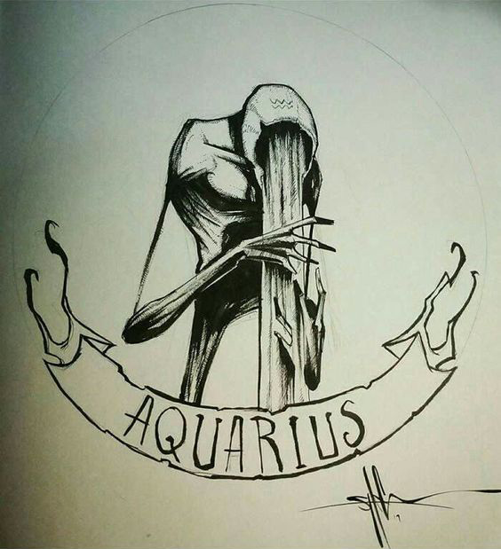
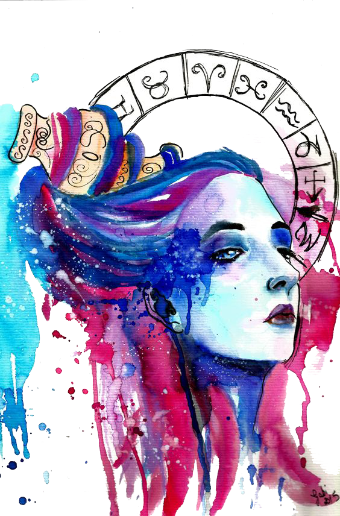

When it comes to love, Aquarius is a funny creature. You’re an idealist who believes in true love, and you’re always searching for a best friend and soulmate in one. On the other hand, your sign rules casual connections, and you guard your independence fiercely.
 The man who carries the pitcher of water is the symbol for this sign. This is because Aquarians are often generous with their time and resources. For this reason this sign often find themselves in occupations where they are helping on some humanitarian level. They are interested and have a deep concern for the welfare of others. They never know a stranger and are generally loved by all around them. Aquarians never meet a stranger and often will go out of their way to meet with people that they’ve not heard from for years.
Aquarians are among the friendliest of the signs, making friends everywhere. They are often chosen among co-workers and family for special awards and honors because of their ability to network. Highly intelligent they are energetic and talented, often using their abilities to help others. Despite their extensive people skills, they often crave alone time to reflect and think about things.